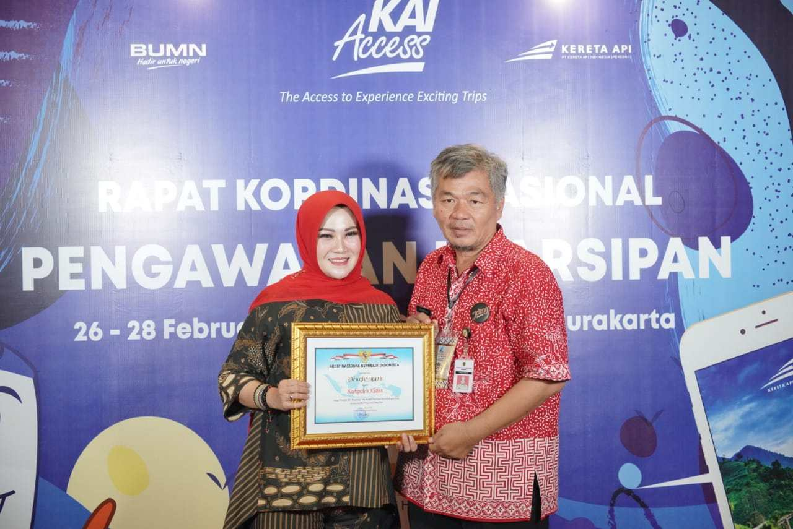
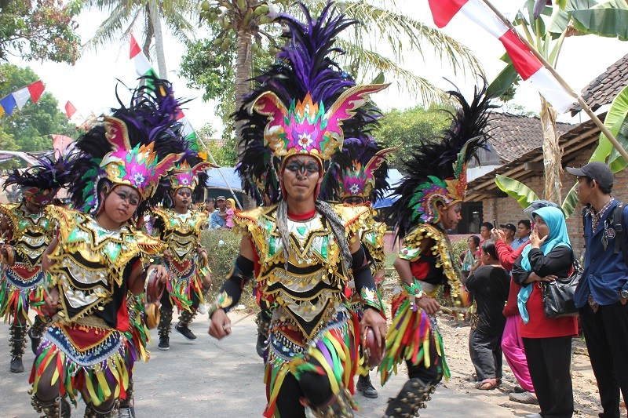

SEJARAH SINGKAT
Sejarah Klaten tersebar diberbagai catatan arsip-arsip kuno dan kolonial, arsip-arsip kuno dan manuskrip Jawa. Catatan itu seperti tertulis dalam Serat Perjanjian Dalem Nata, Serat Ebuk Anyar, Serat Siti Dusun, Sekar Nawala Pradata, Serat Angger Gunung, Serat Angger Sedasa dan Serat Angger Gladag. Dalam bundel arsip Karesidenan Surakarta menjadikan rujukan sejarah Klaten seperti tercantum dalam Soerakarta Brieven van Buiten Posten, Brieven van den Soesoehoenan 1784-1810, Daghregister van den Resi dentie Soerakarta 1819, Reporten 1787-1816, Rijksblad Soerakarta dan Staatblad van Nederlandsche Indie. Babad Giyanti, Babad Bedhahipun Karaton Negari Ing Ngayogyakarta, Babad Tanah Jawi dan Babad Sindula menjadi sumber lain untuk menelusuri sejarah Klaten.
Cerita Kyai dan Nyai Mlati dianggap sebagai sumber terpercaya yang diakui sebagai cikal bakal kampung dan asal muasal nama Klaten yang konon tinggal di kampung Sekalekan
SOSIAL BUDAYA
Kebudayaan adalah upaya manusia meningkatkan harkat dan jati diri di dalam kehidupan melalui perwujudan cipta, karsa dan karyanya. Budaya merupakan salah satu aspek yang sangat penting dalam perkembangan sosial di dalam suatu daerah, sehingga budaya harus dilestarikan. Jika ditilik dari sejarah dan cerita rakyat yang berkembang di masyarakat, maka nilai-nilai luhur yang menjadi corak budaya masyarakat Klaten adalah religius spiritualis dan nasionalisme.
Klaten sedang berbenah untuk mewujudkan sebagai daerah wisata kuliner, dan hal ini ditunjukkan perkembangan jumlah rumah makan dengan berbagai jenis makanan olahan yang berkembang. Kabupaten Klaten sendiri memiliki beragam kebudayaan yang sangat kaya dan hingga saat ini masih menjadi sebuah kebiasaan atau tradisi masyarakatnya. Beberapa kebudayaan di Kabupaten Klaten antara lain kebudayaan menyirih, tradisi padusan, tradisi Syawalan di Bukit Sidhoguri, serta beberapa upacara tradisional Klaten yaitu Upacara Apem Aawiyuu, Upacara Bersih Sendang Sinongko, serta Upacara Sadranan.